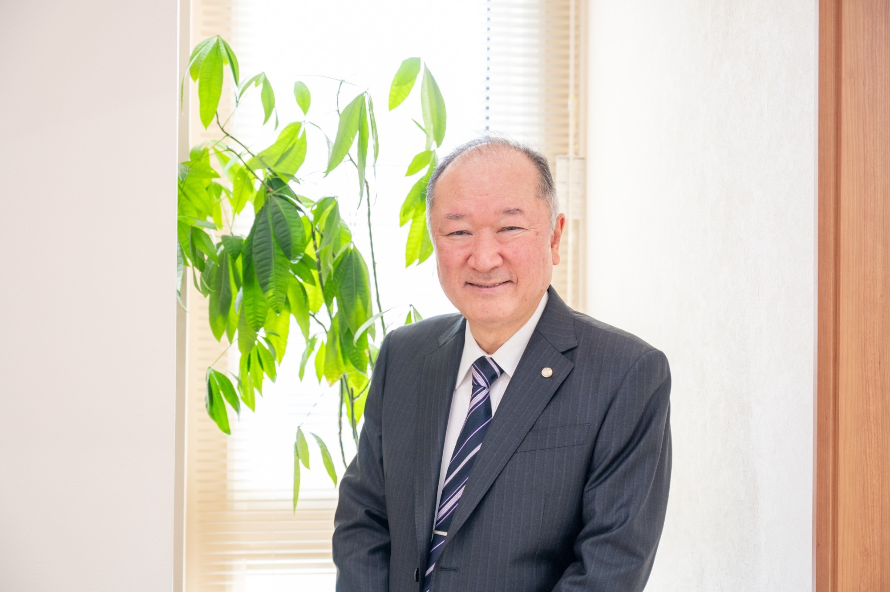
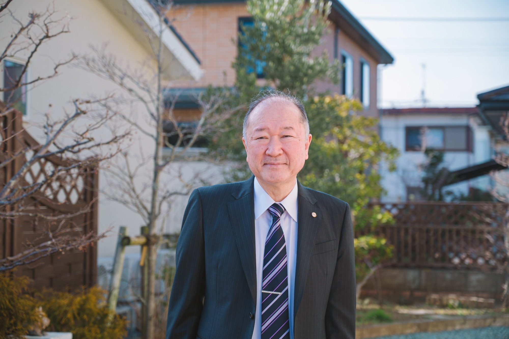
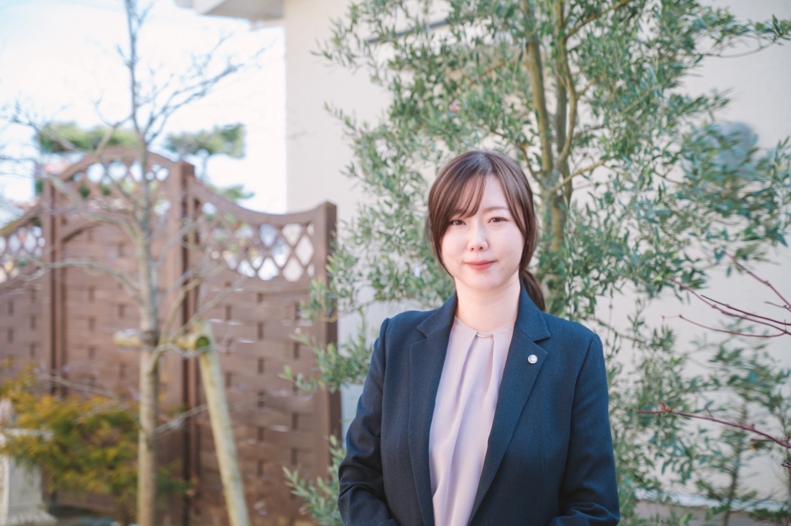
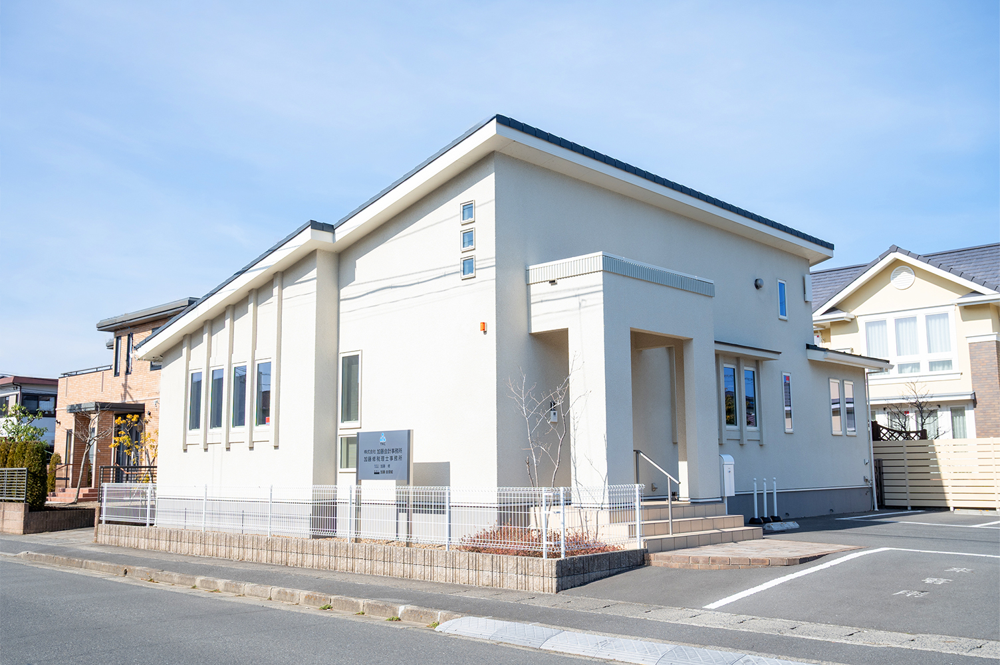
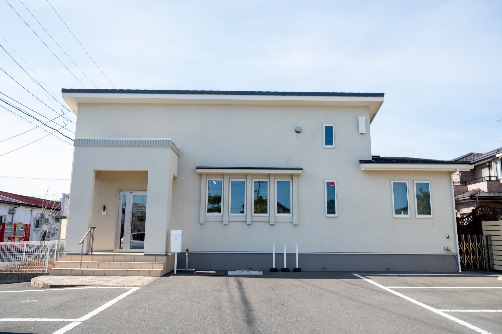
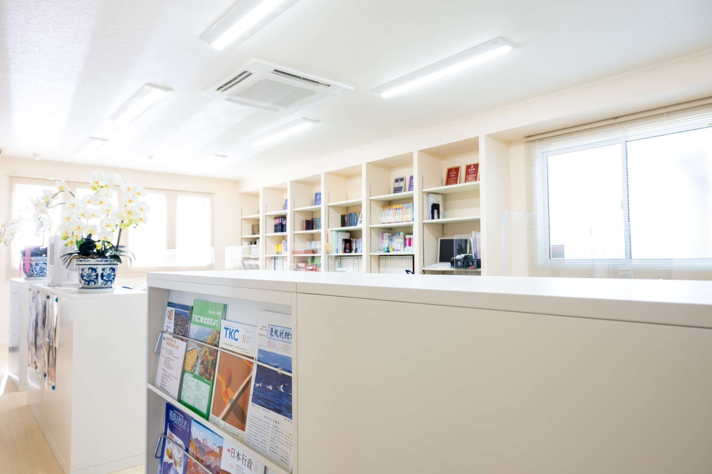

税務調査に強い
信頼の税理士
数多くの税務調査立ち合いを経験し、調査官の視点や指摘ポイントを熟知。事前準備から当日の対応、是正交渉まで一貫してサポートします。不要な追徴課税や精神的負担を最小限に抑え、経営者が本業に集中できる環境を守ります。
数多くの実績で培った経験を活かし、経営者様の本業に集中できる環境を守ります。
数多くの税務調査立ち合いを経験し、調査官の視点や指摘ポイントを熟知。事前準備から当日の対応、是正交渉まで一貫してサポートします。不要な追徴課税や精神的負担を最小限に抑え、経営者が本業に集中できる環境を守ります。
会計DX化と自計化支援により、日々の入力作業や資料作成を大幅に効率化。リアルタイムで経営数値を把握できる体制を構築し、意思決定のスピード向上を実現します。業務負担を減らし、利益体質への転換を支援します。
クリニック向け相談会を通じ、開業前後の資金計画・税務・経営の悩みに対応。医業特有の会計・税務を踏まえた実践的なアドバイスが強みです。今後は支援領域を拡大し、医師の長期的な経営成功を伴走支援します。

私たちは常に「顧客第一主義」を大切にし、お客様にご満足度いただけるサービスの提供に力を尽くしてまいりました。
会計業務にとどまらず、丁寧な対話を通じて、お客様がより良い選択をしていただけるようなご提案を行うことこそ、私たちの役割であると考えております。
質の高いサービスは、信頼関係と専門的な能力の両輪によって支えられています。そのため、私たちは日々学び続け、専門性の向上とコミュニケーションの質の改善に努めております。
これからも、お客様に寄り添いながら、安心してご相談いただける事務所であり続けるよう誠心誠意取り組んでまいします。今後ともご支援とご愛嬌のほど、宜しくお願い申し上げます。
税務・会計から事業承継・医業支援まで、お客様の経営を総合的にサポートします。
会計の正確さに自信はありますか？
当事務所では、毎月お客様のもとを訪問しています。会計帳簿の正確性・適時性を確認し、必要に応じて経理担当者には会計処理のご指導を行うことで、健全な財務状況の維持に貢献します。毎月の面談の中で、経営状況の説明や今後の課題に対してのアドバイスを行い、経営改善に役立てます。予算と実績の対比などを使用した、最新の業績を確認するための資料作成のほか、ご希望に応じて記帳代行も行っています。お客様のいちばん身近な財務パートナーとして、あらゆるご相談に幅広く対応します！
財務データをリアルタイムに把握できていますか？
現代経済において、企業経営は常に効率化と正確性の向上を求められています。デジタル化を進めることで、手作業によるデータ入力の時間を削減し、業務の効率化や正確性の向上、コスト削減にも役立ちます。また会計システムを活用した自計化によって、経営者は自社の財務状況をよりリアルタイムに理解・管理することができるようになるため、素早い経営判断につながります。さらに、電子納税の活用により、税務手続きの効率化と時間短縮を実現し、納税業務の負担を大幅に軽減することが可能です。クラウド会計に精通した専門社員が、クラウド会計導入のメリットだけではなく、想定されるデメリットまでしっかりとご説明し、電子納税を含めたクラウド会計導入・自計化をサポートします。
計画策定や補助金など、必要な準備が整っていますか？
創業・起業時には、様々な課題がつきまといます。ご自身の思い描いた成長を実現するためにも、当事務所では、創業・起業準備の進め方や、業種・業態選び、資金計画や経営計画など、どんなご相談も受け付けています。たとえば、創業融資の申し込み方法や事業計画書などの書類作成方法についてアドバイスを行い、金融機関との面談時には、適切な受け答えができるようサポートします。また、融資不承認で半年間の融資停止となってしまった場合にも、再申請に向けての対応をお手伝いします。創業計画の作成から会社設立・開業後の運営支援まで、当事務所にお任せください。
税理士が提供するサービスは税務・会計だけだと思っていませんか？
当事務所では異業種との幅広いネットワークを生かし、お客様の経営全般をサポートする経営支援を行っています。既存の業務フローや財務構造の見直しを通じて、経営資源をより効果的に活用し、利益の最大化につなげていきます。また、銀行融資だけが企業資金の調達方法ではありません。時代の流れとともに、消費者のニーズ、競合環境、産業の動向は常に変化しています。ビジネスの拡張には、これらの未来を予見し、新規市場開拓や新製品開発、さらには企業合併や提携など、多様な戦略が考えられます。当事務所では、事業計画の策定から資金調達、利益改善策まで、経営のあらゆる面を全面的にサポートし、企業の黒字化を支援します。
経営者の高齢化にともない、事業承継の課題を抱える企業が増えています。
事業承継は、単にビジネスの所有権を次の世代へ移すだけではありません。企業の持続可能な成長、従業員の雇用継続、そして社会への貢献を確保するためには、専門家による適切な対策が不可欠です。また、事業承継の選択肢には、相続やM&Aだけでなく、会社清算・廃業という選択肢もあります。当事務所では、お客様の個別のご状況を踏まえ、様々な選択肢の中から戦略的・計画的に解決へと導きます。
医療業界特有の会計・税務に特化した支援を提供します。
昨今、医療業界を取り巻く経営環境は目まぐるしく変化しています。「経営改善」に取り組み、経営の健全化と体質強化を図ることは、クリニックの存続と発展、そして理想の医療の実現のために必要不可欠です。医療機関の皆様が、より多くの時間とリソースを患者様へのケアに集中していただけるよう、当事務所では、医療法人設立のご支援や事業承継の経験が豊富な税理士が、より医療機関に特化したアドバイスや具体的な対策をサポートします。また、病院やクリニックの事業承継は、個人診療所か医療法人かによって、承継の形態が異なる場合があります。お客様の現状に合わせたご提案します。
ＴＫＣ全国会の基本理念である「自利利他」について、ＴＫＣ全国会創設者飯塚毅は次のように述べています。
大乗仏教の経論には「自利利他」の語が実に頻繁に登場する。解釈にも諸説がある。その中で私は「自利とは利他をいう」（最澄伝教大師伝）と解するのが最も正しいと信ずる。
仏教哲学の精髄は「相即の論理」である。般若心経は「色即是空」と説くが、それは「色」を滅して「空」に至るのではなく、「色そのままに空」であるという真理を表現している。
同様に「自利とは利他をいう」とは、「利他」のまっただ中で「自利」を覚知すること、すなわち「自利即利他」の意味である。他の説のごとく「自利と、利他と」といった並列の関係ではない。
そう解すれば自利の「自」は、単に想念としての自己を指すものではないことが分かるだろう。それは己の主体、すなわち主人公である。
また、利他の「他」もただ他者の意ではない。己の五体はもちろん、眼耳鼻舌身意の「意」さえ含む一切の客体をいう。
世のため人のため、つまり会計人なら、職員や関与先、社会のために精進努力の生活に徹すること、それがそのまま自利すなわち本当の自分の喜びであり幸福なのだ。
そのような心境に立ち至り、かかる本物の人物となって社会と大衆に奉仕することができれば、人は心からの生き甲斐を感じるはずである。
当事務所のスタッフのモットーは、明るく元気に貴社を訪問することです。そして、親身に貴社のご相談相手になれるよう努めています。当事務所に相談したい事項があれば、何なりとお声掛けください。当事務所のスタッフは資格取得などに力を入れていることはもちろん、事務所内での勉強会開催や社外研修にも積極的に参加しております。是非、一度お立ち寄りください。

当事務所は平成2年に開業いたしました。以来、数多くの経営者の皆様とご縁を賜り、責任ある業務に従事してまいりましたことは、独立開業の意義を深く実感させるものでございます。こうした経験を踏まえ、税務申告、会計処理、各種相談業務においては、誠実かつ迅速な対応を心がけ、信頼に足るパートナーとしてお役に立てるよう努めております。昨今の複雑化・高度化する税制環境においては、最新の情報と専門的知見に基づき、企業・個人の皆さまが適切な判断を行えるよう、引き続き支援してまいりますので、今後とも変わらぬご支援を賜りますよう、心よりお願い申し上げます。

当事務所は、皆さまの不安や迷いに寄り添いながら、安心して前に進めるようお手伝いすることを大切にしています。専門的な内容もできるだけ分かりやすく、丁寧にご説明し、状況に合わせた最適な方法を一緒に探してまいります。「相談してよかった」と感じていただけるよう、誠実にサポートいたしますので、どうぞお気軽にお声がけください。



監査担当者として、経営者様をサポートするスタッフを募集しています。当事務所では税務・会計はもちろん、経営に関する様々なお悩みに寄り添い、サポートすることを重視しています。毎月顧問先を訪問し、一緒に課題を解決することで税務会計にとどまらず様々な知識を身につけていくことが可能です。
職員同士の距離が近く、年次や立場に関係なく意見や相談がしやすい環境です。OJTを中心とした教育体制で、実務を通じて着実にスキルアップ。分からないことをそのままにせず、安心して成長できる環境が整っています。
時短勤務や有給取得のしやすさ、残業の少なさなど、ライフワークバランスを重視。TKC提供の研修制度も充実しており、家庭と仕事を両立しながら専門性を高められます。